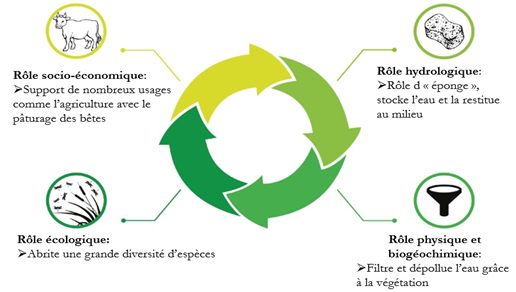
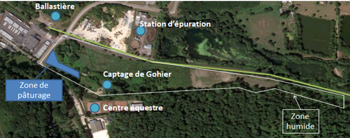

Caracteristiques de la zone humide
Un diagnostic environnemental et des propositions d'aménagements d'une équipe d'étudiants de l'ISTOM pour la ville de Fécamp
Le suivi écologique de la zone humide de Gohier représente l’un des principaux objectifs de la mission du groupe. En effet, la Mairie de Fécamp a rapidement mis en exergue le besoin de travailler sur cette zone, en ciblant de nombreux enjeux qui y sont directement liés. Les zones humides sont de véritables zones tampons sur le plan écologique et il convient donc de les protéger, en référence au Code (art. 127 LDTR) de l'Environnement (art. L211-1-1). La proximité de la station d’épuration des stations de captage et de forage qui alimentent la ville de Fécamp en eau potable, ainsi que la présence d’équidés sur les parcelles concernées, en font une zone à forte sensibilité. La mission du groupe fut d’analyser la dynamique de l’eau de la zone considérée et de proposer des recommandations dans le but de préserver la ressource en eau mais aussi la zone humide au travers de ses fonctions et de sa biodiversité. Cette étude sert à approfondir et compléter les investigations des années antérieures.
Le droit français avec l’article L.211-1 du code de l’environnement (LEGIFRANCE a, 2006), définit les zones humides comme étant des étendues« exploitées ou non, habituellement inondées ou gorgées d’eau douce, salée ou saumâtre de façon permanente ou temporaire ; la végétation, quand elle existe, y est dominée par des plantes hygrophiles, pendant au moins une partie de l’année ».
Aujourd’hui, suite à une note technique du 23 juin 2017, les zones humides se caractérisent suivant deux critères cumulatifs (Travaux publics, 2017) :
- Critère botanique : « la végétation, quand elle existe, y est dominée par des plantes hygrophiles pendant au moins une partie de l’année » ;
- Critère pédologique : « terrains, exploités ou non, habituellement inondés ou gorgés d’eau douce, salée ou saumâtre de façon permanente ou temporaire ».
Les zones humides sont des espaces de transition entre la terre et l’eau et constituent un patrimoine exceptionnel en raison de leur richesse biologique, des fonctions et des services qu’elles remplissent (SAGE Mayenne, 2012).
Elles accomplissent ainsi quatre rôles majeurs (Syndicat Mixte du Bassin Versant des Lacs du Born, 2018) (Douville et al, 2016), qui sont illustrés dans la figure ci-dessous
- Rôle hydrologique en stockant l’eau telle une éponge en période de crue et en la restituant progressivement au cours d’eau lors de l’étiage ;
- Rôle physique et biogéochimique par une filtration physique qui retient les matières en suspension et les polluants, ainsi que par une filtration biologique où interviennent des processus de dénitrification et de déphosphatation ;
- Rôle écologique ou de « réservoir de biodiversité » qui permet d’abriter 30% des espèces végétales remarquables et menacées mais également 50% des espèces d’oiseaux, ce qui permet un maintien de la biodiversité tant floristique que faunistique ;
- Rôle socio-économique en étant le support de nombreux usages et activités grâce à sa forte productivité biologique, elle constitue une ressource importante pour la production agricole ou piscicole mais peut également constituer un milieu à fort potentiel écotouristique.
La zone humide étudiée se trouve sur la commune de Fécamp. Elle se situe à la jonction entre la Valmont et la Ganzeville. La zone humide est longée par la voie verte, qui est une ancienne voie de chemin de fer, réaménagée l’année dernière. La zone humide a une végétation importante et diverse. En effet, nous avons constaté la présence d’arbre juvénile sur une partie de la zone humide. Cette présence s’explique par la présence d’une forêt à proximité de la zone humide.
En savoir plus sur :
Pour l’analyse historique de la zone humide, les données proposées par le site Géoportail ont été utilisées : d’une part la cartographie de l'Etat-Major français entre 1820 et 1860, et d’autre part les photographies aériennes historiques référencées sur le site de 1945 à nos jours. Au XIXe siècle, la zone humide se trouvait dans un fond de vallée peu habité de la Valmont, où les terres étaient cultivées. Le fond de vallée alluviale y facilitait certainement la pratique d’activités agricoles et d’élevages. En 1961, des activités de construction ou d’exploitation des sols semblent débuter à l’emplacement actuel de la station d’épuration. Mais c’est en 1973 que de réels bouleversements sont visibles. Les constructions semblent terminées ou en phase de l’être au niveau du centre équestre et des infrastructures sportives. De plus, les travaux d’aménagements globaux du captage sont en train d’être réalisés. Les travaux des gravières ont été grandement étendus, de nouveaux bassins ont été créés et les habitations se multiplient autour des axes routiers alentours à la zone humide. Les décennies suivantes sont marquées par l’apparition des bassins tels que nous les connaissons aujourd’hui, avec la construction de la station d’épuration entre 1985 et 1998, une multitude d’habitats construits, le développement des voiries et le recul en amont de la vallée des surfaces cultivables. Enfin, les travaux récents au niveau de la zone humide concernent l’aménagement de la voie verte. L’ancienne voie ferrée a été réaménagée en vélo-route et longe ainsi la zone humide (TRAME, 2017).
La zone humide est localisée à proximité du captage de Gohier. Le captage de Gohier est l’unique source d’eau potable de la ville. Cette source se doit donc d’être protégée pour éviter une pollution. Au niveau législatif, cette source est protégée afin de la préserver contre les pollutions accidentelles, régulières ou ponctuelles. Il existe trois périmètres de protection mis en place : - Périmètre de Protection Immédiat (PPI) : zone clôturée appartenant à une collectivité publique (commune de Fécamp dans le cas du captage de Gohier) où tous les usages sont interdits excepté les usages liés à l’exploitation de la ressource pour éviter les pollutions sur site. - Périmètre de Protection Rapproché (PPR) : zone plus étendue où les usages sont très limités pour éviter les pollutions de la ressource et où les installations ou infrastructures sont soumises à des dérogations. - Périmètre de Protection Eloigné (PPE) : zone facultative (concerne généralement le Bassin d’Alimentation de Captage (BAC) en partie ou dans son ensemble) pour éviter les pollutions possibles directes ou indirectes de la ressource (Eau France e, 2017). La zone humide de Fécamp se trouve dans le périmètre de protection rapproché (PPR) et immédiat (PPI). En parallèle, la zone humide possède des caractéristiques naturelles de dépollution (se référer partie I.2. Rôles majeurs d’une zone humide). Il y a un double enjeu dans la préservation de ce milieu. La préservation de la ressource en eau elle-même mais aussi de la zone humide au travers de ses fonctions et de sa biodiversité. Enfin, le long de cette zone a été réalisée une voie verte. La population peut donc venir se balader le long de la zone humide et profiter de son cadre et de sa richesse écologique. La zone humide représente donc un enjeu environnemental, économique et social, qui implique aujourd’hui d’être préserver et valoriser. Depuis plusieurs années les étudiants de l’ISTOM travaillent conjointement avec la mairie de Fécamp sur la thématique de la zone humide. Les années précédentes, les étudiants ont œuvré pour sa restauration, sa préservation et sa valorisation. Dans un premier temps, l’objectif de cette année est de compléter l’étude de la dynamique végétale de la zone. L’étude de cette dynamique nous permettra par la suite de pouvoir recommander des mesures afin de conserver la zone humide. Dans un deuxième temps nous analyserons le comportement de l’eau dans le sol pour observer son évolution au cours du temps. Cette observation nous permettra entre autres, d’étudier l’évolution des parcelles ayant été piétinées par les chevaux et celles impactées par la présence nouvelle d’arbres juvéniles. Enfin, des propositions de valorisation de la zone humide seront abordées en continuité avec les années précédentes.
Ce qu'on a fait avec un calendrier des photos du concret + méthodo
Afin d’étudier la dynamique végétale de la zone humide il a été décidé de réaliser un inventaire phytosociologique sur la zone, orienté cette année pour mettre en évidence la dynamique phytosociale et notamment la régénération arborée de la zone herbacée. Pour ce faire, la technique du transect a été utilisée avec spécifiquement des distances et une superficie au regard des objectifs de compréhension de la dynamique de régénération arborée.
Deux transects ont été réalisés en partant de la voie verte en direction de la forêt (Figure X) et spécifique à l’endroit où il existe une certaine avancée de la forêt sur la zone herbacée.
Figure 23 : Carte localisant les transects (TRAME, 2018)
Le transect est une méthode d’Inventaire Biologique Rapide (IBR), elle fournit des informations concernant la physionomie de la végétation.
Pour réaliser un transect, tendre une corde sur une longueur de 20m, puis de part et d’autre de la corde délimiter une bande d’1m de large qui correspond à la zone où l’on dénombre la flore, cela forme un rectangle de 20m de long et de 2m de large. Découper ensuite ce rectangle en segments d’1m afin de faciliter la détermination (Figure 22).
Figure 24 : Schéma du transect réalisé (TRAME, 2018)
Procéder ensuite au dénombrement de la flore sur chaque bande d’1m sur 1m de part et d’autre de la corde. Il faut pour cela déterminer dans un premier temps l’espèce, cela peut se faire directement sur le terrain avec l’aide du logiciel PlantNet, facilement téléchargeable sur un smartphone (Pl@ntNet, 2018). Si l’identification s’avère difficile, prélever un échantillon dans un sachet plastique étiqueté et le déterminer par la suite à l’aide d’une flore. Lors de ces inventaires les flores de Bonnier de 1985, de Dumé de 2018., de Lambion de 1999 et de Tison de 2014 ont été utilisées afin de déterminer les espèces.
Parallèlement pour chaque espèce, plusieurs paramètres sont à déterminer in-situ :
- Le stade phénologique (floraison, fructification, végétation ou fanaison)
- L’abondance-dominance selon Braun-Blanquet
C’est une échelle des coefficients d’abondance-dominance (de recouvrement) de Braun-Blanquet (Figure 23).
L’abondance correspond au nombre d’individus qui forme la population de
l’espèce dans le relevé. La dominance quant à elle, est le recouvrement de
l’ensemble des individus d’une espèce donnée, comme la projection verticale
de leur appareil végétatif aérien sur le sol.
Le coefficient d’abondance-dominance est estimé visuellement. L'échelle
habituellement utilisée est la suivante (Biodis, 2015) :
v 5 : Nombre quelconque d’individus – recouvrement > 3/4 de la surface de référence (> 75%) ;
v 4 : Recouvrement entre 1/2 et 3/4 (50–75% de la surface de référence) ;
v 3 : Recouvrement entre 1/4 et 1/2 (25–50% de la surface de référence) ;
v 2 : Recouvrement entre 1/20 et 1/4 (5–25% de la surface de référence) ;
v 1 : Recouvrement < 1/20, ou individus dispersés à couvert jusqu’à 1/20 (5%) ;
v + : Peu d’individus, avec un très faible recouvrement ;
v r : Rare;
v i : Individu.
Figure 25 : Coefficient d’abondance-dominance (recouvrement) de Braun-Blanquet (Biodis, 2015)
- La sociabilité
Cette valeur d’après Braun-Blanquet (1951), désigne le degré de dispersion spatiale des individus (Figure 24).
❖ 5 : Population presque pure, importante ;
❖ 4 : Petites colonies nombreuses ou formant un large tapis ;
❖ 3 : Population formant des petits groupes ou des coussins ;
❖ 2 : Agrégats ou groupes denses ;
❖ 1 : Croissance solitaire.
Figure 26 : Sociabilité (Biodis, 2015)
Enfin les paramètres suivants peuvent être obtenus ex-situ :
- Le nom scientifique
- Le type biologique qui est déterminé par la morphologie générale de l’espèce, qui exprime en partie son adaptation à l’environnement. Il existe 5 types de végétaux terrestres (Davoust P, 2018) :
❖ Phanérophyte : feuilles tombent ou non, les zones les plus sensibles (méristèmes) sont protégées par des structures temporaires de résistance (bourgeons), au-dessus de 80cm du sol ;
❖ Chaméphyte : feuilles tombent ou non, les bourgeons les plus bas bénéficient de la protection de la neige, entre 0 et 80cm du sol ;
❖ Géophyte (ou cryptophyte) : passent la période froide protégées par le sol, la partie aérienne meurt ;
❖ Thérophyte (ou plante annuelles) : passent l’hiver à l’état de graine, l’ensemble de la plante meurt ;
❖ Hémicryptophyte : stratégie mixte qui combine celle des géophytes et des chaméphytes, le bourgeon est à moitié caché au niveau du sol.
Les types biologiques ont été déterminés à l’aide du réseau collaboratif Tela Botanica (Tela Botanica, 2018).
Les investigations floristiques ont permis d’identifier pour le premier transect 19 espèces dont 2 espèces ligneuses et 17 espèces herbacées.
Les espèces de la strate ligneuse sont réparties dans 2 genres, regroupés en 2 familles. Tandis que les espèces de la strate herbacée sont réparties dans 15 genres qui sont regroupés en 15 familles (Tableau 3).
Tableau 3 : Richesse spécifique du Transect 1 (TRAME, 2018)
|
Nom vernaculaire |
Nom scientifique |
Ligneuse/Herbacée |
Famille |
|
Cardère |
Dipsacus |
Herbacée |
Dipsacaceae |
|
Chardon |
Carduus crispus |
Herbacée |
Asteraceae |
|
Doucette |
Epilobium angustifolium |
Herbacée |
Onagraceae |
|
Eupatoire |
Eupatorium cannabimm |
Herbacée |
Asteraceae |
|
Gaillet |
Galium uliginosum |
Herbacée |
Rubiaceae |
|
Iris jaune |
Iris pseudacorus |
Herbacée |
Iridaceae |
|
Jonc plein |
Juncus effusus |
Herbacée |
Juncaceae |
|
Jonc vide |
Juncus acutiflorus |
Herbacée |
Juncaceae |
|
Massette |
Typha latifolia |
Herbacée |
Typhaceae |
|
Menthe aquatique |
Mentha aquatica L. |
Herbacée |
Lamiaceae |
|
Menthe |
Mentha suavolus |
Herbacée |
Lamiaceae |
|
Ortie |
Urtica urens |
Herbacée |
Urticaceae |
|
Renoncule |
Ranunculus repens |
Herbacée |
Ranunculaceae |
|
Ronce |
Rubus fruticosus |
Semi-ligneuse à ligneuse |
Rosaceae |
|
Roseau |
Phragmite australis |
Herbacée |
Poaceae |
|
Rumex |
Rumex crispus |
Herbacée |
Polygonaceae |
|
Salicaire commune |
Lythrum salicaria |
Herbacée |
Lytracea |
|
Saule marsault |
Salix caprea |
Ligneuse |
Salicaceae |
|
Scrofulaire |
Scrophularia auriculata |
Herbacée |
Scrophulariaceae |
Pour le second transect 17 espèces dont 2 espèces ligneuses, 14 espèces herbacées et 1 bryophyte ont été inventoriées (Tableau 4).
Tableau 4 : Richesse spécifique du Transect 2 (TRAME, 2018)
|
Nom vernaculaire |
Nom scientifique |
Ligneuse/Herbacée |
Famille |
|
Cirse |
Cirsium palustre |
Herbacée |
Asteraceae |
|
Doucette |
Epilobium angustifolium |
Herbacée |
Onagraceae |
|
Eupatoire |
Eupatorium cannabinum |
Herbacée |
Asteraceae |
|
Iris jaune |
Iris pseudacorus |
Herbacée |
Iridaceae |
|
Jonc plein |
Juncus effusus |
Herbacée |
Juncaceae |
|
Jonc vide |
Juncus acutiflorus |
Herbacée |
Juncaceae |
|
Massette |
Typha |
Herbacée |
Typhaceae |
|
Menthe aquatique |
Mentha aquatica L. |
Herbacée |
Lamiaceae |
|
Mousse |
Bryophyta |
/ |
Shagnidée |
|
Nerprun |
Rhamnus cathartica L. |
Arbuste |
Rhamnaceae |
|
Ortie |
Urtica urens |
Herbacée |
Urticaceae |
|
Oseille/Rumex |
Rumex crispus |
Herbacée |
Polygonaceae |
|
Oseille à feuilles obtuses |
Rumex obtusifolius L. |
Herbacée |
Polygonaceae |
|
Renoncule |
Ranunculus repens |
Herbacée |
Ranunculaceae |
|
Ronce |
Rubus fruticosus |
Ligneuse |
Rosaceae |
|
Roseau |
Phragmite australis |
Herbacée |
Poaceae |
|
Saule marsault |
Salix caprea |
Ligneuse |
Salicaceae |
Ainsi au total, 23 espèces ont été recensées, dont 2 ligneuses, 20
herbacées et 1 bryophyte.
Il est intéressant de souligner que les espèces ligneuses présentes sont
les mêmes sur les deux transects (ronce et saule marsault). Alors que
certaines espèces herbacées ne sont présentes que sur l’un des transects,
comme la patience à feuilles obtuses, le nerprun, le cirse, présentent
uniquement sur le second transect ; tout comme le gaillet ou la cardère
pour le transect 1.
Par ailleurs, la présence de jeunes plants d’Alnus (aulne glutineux) mais
non présents sur les transects a été remarqué dans la zone humide (du fait
d’un taux de régénération moins fort que le saule). Ils contribueraient
aussi à la fermeture future de la zone herbacée par ces ligneux
En comparant avec les années précédentes le nombre d’espèces inventoriées est approximativement le même que l’année précédente mais est inférieur aux années 2015 et 2016 (Tableau 5).
Tableau 5 : Nombre d’espèces inventoriées en fonction des années (TRAME, 2018)
|
Année |
Nombre d’espèces inventoriées |
|
2015 |
35 |
|
2016 |
52 |
|
2017 |
23 |
|
2018 |
24 |
Cette différence peut provenir du fait qu’en 2015 et 2016 l’inventaire ait été réalisé sur trois endroits différents (contre deux cette année) et c’est la technique de l’aire minimale qui avait été utilisée. Le nombre de transects et les dimensions des transects sont moindres cette année en comparaison de ceux des autres années par le fait d’une volonté de mettre en évidence la dynamique d’eutrophisation de la zone herbacée par les espèces arbustives.
Par ailleurs, cela peut indiquer une tendance de certaines espèces à
prendre le dessus sur d’autres.
En effet, si on regarde les indices d’abondance-dominance et de
sociabilité, on remarque que les espèces comme l’ortie, l’iris jaune, la
renoncule ou encore la menthe aquatique sont très présentes et occupent
beaucoup d’espace. Tandis que des espèces comme l’épilobe, le nerprun ou le
cirse se font beaucoup plus éparse, voire n’apparaissent plus à certains
endroits.
Des espèces ligneuses comme la ronce et le saule marsault commencent en
revanche à apparaître.
La partie arborée de la zone humide commencerait-elle à envahir
progressivement la partie herbacée ?
La compréhension de cette dynamique et surtout l’adaptation des espèces à l’environnement passent tout d’abord par une analyse des types biologiques des espèces présentes.
L’analyse des types biologiques de la strate herbacée (Figure 25), montre une prédominance pour les plantes hémicryptophytes (62%) puis pour les plantes géophytes (29%). Ces deux types biologiques ont relativement les mêmes stratégies d’adaptation. Elles passent l’hiver protégées dans le sol ou au niveau du sol par la litière (Annexe 2).
Tandis que la strate ligneuse est représentée de manière identique par les types biologiques hémicryptophytes et phanérophyte (50% chacun).
Ici ce sont deux stratégies différentes, comme expliqué précédemment les hémicryptophytes ont leurs bourgeons au niveau du sol, alors que les phanérophytes sont des plantes ayant les bourgeons situés au-dessus de 80 cm, qui peuvent perdre leurs feuilles et possèdent des bourgeons.
Dans la strate ligneuse l’espèce correspondante au type biologique
phanérophyte est le saule marsault. Les autres espèces entrent donc en
compétition avec lui pour l’accès à la ressource et à la lumière.
En effet le saule possède d’une part des racines qui peuvent aller chercher
profondément les nutriments dans le sol. D’autre part il a une cime plus
haute qui diminue l’accès à la lumière pour les autres espèces.
Figure 27 : Spectres biologiques moyens de la strate herbacée pour l’ensemble des transects en fonction de la richesse spécifique (nombre d’espèces) (TRAME, 2018)
Figure 28 : Spectres biologiques moyens de la strate ligneuse pour l’ensemble des transects en fonction de la richesse spécifique (nombre d’espèces) (TRAME, 2018)
Cela peut ainsi confirmer l’hypothèse précédente concernant l’avancée de la zone arborée sur celle herbacée. Si la proportion de saule devient trop importante, la diversité floristique de la zone humide peut diminuer, son rôle de zone tampon et sa physionomie passer de l’état herbacé (espace ouvert) à un état arboré (espace fermé).
C’est pourquoi il est important de s’intéresser aux espèces recensées afin de vérifier si elles sont bien indicatrices de zone humide (notion d’appartenance au cortège des plantes de la zone humide) et si leur proportion diminue ou augmente en fonction des années.
D’après la table indicatrice des zones humides de l’arrêté du 24 juin 2008 précisant les critères de définition et de délimitation des zones humides en application des articles L. 214-7-1 et R. 211-108 du code de l'environnement (LEGIFRANCE c), 75% des espèces recensées (Tableaux 3 et 4) sont des espèces indicatrices de zone humide.
Parmi ces espèces le saule est une espèce indicatrice de zone humide. L’augmentation de ces individus ne modifierai pas le statut de zone humide mais impacterai sa physionomie.
Pour prendre une décision concernant la gestion de cette zone humide, de nouvelles analyses floristiques couplées avec des analyses faunistiques devraient être réalisées sur différentes saisons notamment en période printanière et estivale afin de se rendre compte de manière plus précise de la dynamique de la zone humide et de son possible devenir. En effet la période début novembre où ont été réalisés les relevés n’est pas la plus propice pour identifier la flore (beaucoup de plantes fanées ou disparues) et la faune (beaucoup d’espèces ont déjà migrées ou en stade d’hibernation).
Afin de comprendre la dynamique de l’eau dans le sol de la zone humide, cinq carottages et quatre tests d'infiltrométrie ont été effectués. Les tests ont été réalisés à quatre endroits différents de la zone humide : la zone actuelle de pâturage, l’ancienne zone de pâturage, la zone où il y a l’apparition d’arbustes juvéniles et une zone avec moindrement d’arbustes juvéniles.
Figure 29 : Carte localisant les carottages et les tests d’infiltrométrie (TRAME, 2018)
La carte ci-dessus montre les lieux de carottage (point rouge) et de test d’infiltration par double anneau (point bleu) (Cf. IV.3.) Chaque lieu représente une partie différente de la zone humide permettant d’étudier la dynamique de l’eau sur l’ensemble de la zone à travers le carottage et l’infiltrométrie.
Le carottage permet de prélever un échantillon du sous-sol. Ce prélèvement est réalisé à l’aide d’une tarière en l'enfonçant par rotation manuelle dans le sol. Chaque prélèvement fait 20cm, et est disposée successivement sur un carton gradué pour pouvoir visualiser l’échantillon au complet. L’objectif étant de comprendre le comportement de l’eau dans le sol, les prélèvements sont réalisés jusqu’à la lame d’eau. Dans certains cas la présence de cailloux a limité la profondeur des prélèvements, d’où des carottes de longueur différentes sur l’ensemble des prélèvements.
Ensuite, chacun des échantillons est analysé. Pour chaque échantillon est décrit sa couleur, son odeur, sa texture, sa granulométrie. Cela permet de distinguer les différents horizons présents.
Une zone humide est caractérisée par trois sortes de traits d’hydromorphie dus à différents engorgements de l’eau dans le sol donnant trois types d’horizons :
- Horizon histique ;
- Horizon réductique ;
- Horizon rédoxique.
Les horizons histiques sont des horizons holorganiques entièrement constitués de matières organiques et formés en milieu saturé par la présence d'eau durant des périodes prolongées (plus de six mois dans l'année) (MEDDE GIS Sol, 2013).
Les horizons réductiques sont dus à un engorgement permanent avec un manque d'oxygène dans le sol provoquant un milieu réducteur riche en fer ferreux ou réduit. Un volume de 95% à 100% du sol prend une couleur bleuâtre-grisâtre (Eau France c. 2015).
Les horizons rédoxique sont dus à un engorgement temporaire. Le sol étant en présence d’eau et d'oxygène, le fer alterne entre oxydation et réduction. Le fer précipite et forme des taches de rouilles dans les sols. On catégorise un horizon rédoxique quand il possède plus de 5% de trait rédoxique (Eau France b. 2015).
Pour avoir la formation de ces horizons, le sol doit contenir : de l’eau,
de l'oxygène et du fer.
On notera qu’une zone humide peut ne posséder aucune de ces
caractéristiques en cas d’absence de fer ou d’autres éléments chimiques
interagissant avec l’eau et l'oxygène.
Par ailleurs, en 2016, les étudiants de l’ISTOM en analysant le comportement de l’eau dans la zone humide ont déduit que l’eau était répartie de façon homogène dans le sol tout au long de la parcelle. Toutefois une augmentation de la saturation en eau vers le sud en direction de la voie verte est à noter.
Par la suite, une confrontation des résultats obtenus cette année avec ceux de 2016 sera réalisée afin de visualiser l’évolution de la dynamique de l’eau dans la zone humide.
L’analyse de la dynamique de l’eau dans la zone est effectuée dans un premier temps par l’étude des carottages réalisés.
Le carottage C1 visible sur la photographie suivante a été réalisé au niveau des néo-arbustes de la zone humide.
Figure 30 : Carottage C1 (TRAME, 2018)
Deux horizons se distinguent :
Tableau 6 : Description des horizons du carottage C1 (TRAME, 2018)
|
Horizon 1 |
Horizon 2 |
|
|
Profondeur |
0 à 35cm |
35 à 60cm |
|
Granulométrie |
Très fin |
Gros |
|
Texture |
Matière organique |
Matière organique |
|
Type de sol ou d’horizon |
Sol tourbeux |
Sol tourbeux |
|
Racine |
Présence |
Absence |
L’absence de traces réductiques ou rédoxiques due à l'absence du fer est à
noter. Il est donc plus compliqué d’observer et d’analyser la dynamique de
l’eau dans le sol à cet endroit.
Concernant la lame d’eau, elle est située à 55cm de profondeur. Cela
implique une présence importante d’eau dans le sol à faible profondeur.
Figure 31 : Carottage C2 (TRAME, 2018)
Le carottage C2 visible sur la photographie précédente a été réalisé après la zone des néo-arbustes. Sur ce carottage, deux horizons se distinguent :
Tableau 7 : Description des horizons du carottage C2 (TRAME, 2018)
|
Horizon 1 |
Horizon 2 |
|
|
Profondeur |
0 à 45cm |
45 à 70cm |
|
Granulométrie |
Fin |
Gros |
|
Texture |
Matière organique |
Matière organique |
|
Type de sol ou d’horizon |
Sol tourbeux |
Sol tourbeux |
|
Racine |
Présence |
Absence |
Comme pour l’échantillon précédent (C1) l'absence de trace réductique et
rédoxique est à noter.
L’absence d’eau jusqu’à 70cm de profondeur est par ailleurs à souligner. En
effet, la forte présence de cailloux a empêché la réalisation
d’investigations plus en profondeur.
Le carottage C3 présenté dans la figure suivante a été réalisé au niveau de la zone actuelle de pâturage des chevaux, au-dessus de la zone humide.
Figure 32 : Carottage C3 (TRAME, 2018)
Sur ce carottage, quatre horizons se distinguent :
Tableau 8 : Description des horizons du carottage C3 (TRAME, 2018)
|
Horizon 1 |
Horizon 2 |
Horizon 3 |
Horizon 4 |
|
|
Profondeur |
0 à 20cm |
20 à 30cm |
30 à 60cm |
60cm à 1m70 |
|
Granulométrie |
Très fin |
Fin |
Moyen |
Gros |
|
Texture |
Matière organique |
Matière organique |
Limoneux-argileux |
Limoneux-argileux |
|
Type de sol ou d’horizon |
Sol tourbeux |
Sol tourbeux |
Horizon rédoxique |
Horizon réductique |
|
Racine |
Présence |
Absence |
Absence |
Absence |
Sur cet échantillon est visible un horizon rédoxique (l’horizon 3) identifiable grâce à sa couleur rouge et un horizon réductique (horizon 4) caractérisable grâce à sa coloration bleu-grisâtre.
Au sein de l’horizon rédoxique se produit des réactions entre l’eau, l'oxygène et le fer. En effet, il y a eu présence d’eau qui, en se retirant a laissé place à l'oxygène, oxydant ainsi le fer, d'où la présence de taches de couleur rouille.
L’horizon rédoxique quant à lui subit des interactions avec l’eau et le fer. L’eau étant présente constamment cela ne laisse aucune place à l'oxygène pour interagir avec le fer.
Par ailleurs, il est important de souligner que la lame d’eau de cet échantillon se situe à 1m70 de profondeur. Cependant, la lame d’eau en zone humide se situe normalement moins profondément dans le sol du fait de son caractère intrinsèque humide.
Figure 31 : Carottage C4 (TRAME, 2018)
Le carottage C4 visible sur la photographie précédente a été réalisé avant la zone des néo-arbustes. Sur ce carottage, deux horizons se distinguent :
Tableau 9 : Description des horizons du carottage C4 (TRAME, 2018)
|
Horizon 1 |
Horizon 2 |
|
|
Profondeur |
0 à 35cm |
35 à 90cm |
|
Granulométrie |
Très fin |
Gros |
|
Texture |
Matière organique |
Matière organique |
|
Type de sol ou d’horizon |
Sol tourbeux |
Sol tourbeux |
|
Racine |
Présence |
Absence |
Les caractéristiques de cet échantillon sont similaires à celle de
l’échantillon C2.
Concernant la lame d’eau elle est située à 90cm de profondeur.
L’absence d’éléments oxydables et réductiques dans le sol de la zone humide a compliqué la compréhension de la dynamique de l’eau dans la zone. Cependant, la détection de la profondeur de la lame d’eau renseigne sur sa dynamique.
Les différents résultats sur les lames d’eau démontrent que la dynamique de l’eau n’est pas la même tout au long de la zone humide. En effet, sur les trois échantillons réalisés dans la zone humide, les profondeurs des carottages C2 et C4 concordent (70cm) mais celle du carottage C1 est nettement inférieure. De surcroit, on peut s’adosser sur les résultats antérieurs pour évoquer l’action de la végétation supérieure sur l’écoulement de l’eau dans les couches, comme une sorte d’irrégularité de fonctionnement d’écoulement de l’eau selon le type de végétation de surface avec malgré tout une certaine homogénéité d’écoulement et de répartition dans toute cette zone humide.
En effet l’équipe de Fécamp 2016 (TRAME, 2016), avait conclu dans leur étude hydrologique que l’eau dans la zone humide était répartie de manière assez homogène. Cette différence de profondeur est donc un changement récent, amenant à émettre l'hypothèse que la partie arbustive de la zone humide draine l’eau. En outre, le drainage réalisé par les racines des arbres acheminerait l’eau plus en surface mais apporterai un effet drainant. Par conséquence, la néo-forêt provoquerait donc des changements dans la dynamique de l’eau de la zone humide.
Pour confirmer cette hypothèse et comprendre de manière plus approfondie la dynamique de l’eau dans la zone humide, des relevés hydrologiques devraient être réalisés sur différentes saisons. En effet, la période de début novembre où ont été réalisés les relevés ne montre la dynamique de l’eau dans le sol que pendant une période de l’année précise. Il faudrait ainsi étudier les profondeurs d’eau et les variations de pluviométrie sur plusieurs périodes de l’année. Une telle approche amènerait finalement une meilleure compréhension du rôle et du fonctionnement de la zone humide vis-à-vis de la ressource en eau et permettrai peut-être d’en faciliter sa préservation et son usage.
Il s’agit ici d’analyser le comportement du sol dans sa globalité, il est donc nécessaire de prendre en compte à la fois son comportement vis-à-vis de l’eau en surface, mais également plus en profondeur comme cela a été vu dans la partie précédente.
La méthode appropriée est celle du double anneau qui permet une analyse relative aux premiers centimètres du sol, prenant ainsi en compte l’impact de la végétation et de l’état du sol en surface. Elle permet concrètement d’apprécier la vitesse d’infiltration de l’eau dans le sol dès la surface et après saturation en eau. Comme cela a été expliqué partie I.2., cette dynamique de l’eau est particulièrement importante au sein d’une zone humide, qui a notamment le rôle de zone tampon face aux inondations.
Les mesures d’infiltration ont été réalisées à proximité de chaque
carottage, comme cela est visible sur la figure X (
Carte localisant les carottages et les tests d’infiltrométrie (TRAME,
2018))
.
Dans la continuité du travail réalisé les années précédentes, la zone de
pâturage des équidés a été analysée, ainsi que plusieurs endroits de la
zone humide qui comportaient des peuplements végétaux différents, comme
cela est visible sur le tableau x ci-dessous. Ces différentes
caractéristiques peuvent potentiellement influencer les résultats obtenus
selon les stations (tassement superficiels ou présence de racines dans le
sol par exemple).
Les analyses déjà réalisées lors d’une période similaire à celle durant laquelle est intervenue l’équipe 2018 ont montré qu’il y avait, en effet, une modification de la constitution du sol aux endroits pâturés (TRAME, 2017). Le contexte climatique est cependant différent pour cette année en raison des mois particulièrement secs qui ont précédé l’intervention de l’équipe sur le terrain.
Tableau 10 : Environnement des différentes stations d’infiltrométrie
|
Station |
A |
B |
C |
P |
|
Végétation |
Litière et grandes herbacées, grands arbustes |
Peu de ligneux, herbacées (orties, menthe…) |
Strate basse, herbacés et arbustes |
Prairie permanente, quelques bosquets, arbres le long du cours d’eau |
|
Paysage |
Naturel (zone humide), sol saturé en eau |
Naturel (zone humide), sol saturé en eau |
Naturel (zone humide) |
Naturel, anthropique, sol sec |
|
Animaux environnants |
Oiseaux et insectes |
Equidés à 20m (ancienne prairie), canards à proximité |
Oiseaux et insectes |
Équidés en pâturage |
|
Remarques |
Difficulté à accéder au sol |
L’utilisation de deux anneaux permet d’assurer une infiltration la plus verticale possible au niveau de l’anneau central, qui est celui dans lequel la mesure est effectuée. Le schéma suivant résume le processus :
Figure 33 : Fonctionnement de l’infiltromètre à double anneau (SDEC France,
2017)
Installation du dispositif : cela consiste à enfoncer deux anneaux l’un dans l’autre dans le sol, sur une profondeur d’environ 5cm pour éviter toute fuite d’eau en surface. Un pont contenant canne de mesure et flotteur est ensuite placé sur l’anneau central. De l’eau est versée dans l’anneau extérieur, puis dans l’anneau intérieur sur une dizaine de centimètres : le niveau d’eau doit toujours être identique pour les deux anneaux, et ne pas descendre sous un certain seuil pour éviter une perte de charge hydraulique (Oung et al, 2013).
Lancement de la mesure : une fois les anneaux remplis, la mesure est lancée : un relevé régulier suivi par chronomètre de la hauteur d’eau dans l’anneau via le flotteur est effectué jusqu’à ce que les valeurs deviennent constantes. Cela peut prendre de quelques minutes à plusieurs heures selon le type de sol (Eijkelkamp. 2014). La vitesse d’infiltration de l’eau va ainsi diminuer au fur et à mesure que le sol se sature et que le front d’infiltration descend dans le sol, jusqu’à se stabiliser : le régime permanent est alors atteint, le sol est saturé en eau.
Un carottage est par la suite réalisé juste sous l’appareil, puis sera comparé au carottage effectué sur sol non saturé afin de connaître la hauteur du front d’infiltration à saturation (Université catholique de Louvain, 2017).
Grâce aux données récoltées et à la loi de Darcy, il sera ainsi possible de
calculer la conductivité hydraulique, déterminant la perméabilité du sol
selon le tableau suivant :
Figure 34 : Classe de perméabilité des sols (Food and Agriculture Organization, 2016)
Les quatre mesures au niveau des stations décrites précédemment ont été réalisées sur plusieurs heures, avec des rechargements en eau réguliers des deux anneaux effectués de façon à ne pas perturber la mesure en cours. Comme cela était prévu, l’eau s’est infiltrée particulièrement vite dans un premier temps, avant que le processus ne devienne plus lent.
Figure 35 : Mise en place du double anneau (TRAME, 2018)
Les résultats obtenus sont les suivants :
Station A
(près du carottage C1) : Ksat,A = 5,55.10-3mm/s soit
5,55.10-6m/s
Elle est située au niveau de la zone des néo-arbustes, soit à l’endroit où
la végétation est la plus dense. A l’issue de presque 2h de mesures, une
épaisseur de lame d’eau de 5cm s’est infiltrée dans le sol, ce qui met en
évidence le fait que le sol était déjà relativement saturé en eau, ce qu’a
également confirmé le carottage réalisé. La valeur Ksat obtenue
(constante de perméabilité) montre que le sol est semi-perméable, voire
perméable (Figure 22 : classe de perméabilité des sols).
Station B
(près du carottage C2) : Ksat,B = 6,66.10-3mm/s soit
6,66.10-6m/s
La zone concernée ici contient une végétation moins dense avec une strate
plus basse, ce qui peut être mis en lien avec le fait qu’elle était pâturée
il y a quelques années. A l’issue de plus d’une heure et quart de mesures,
une épaisseur de lame d’eau de moins d’un centimètre s’est infiltrée dans
le sol. De la même manière qu’au-dessus, le sol est particulièrement saturé
en eau et semi-perméable voire perméable.
Station C
(près du carottage C4) : Ksat,C = 1,33.10-3mm/s soit
1,33. 10-6m/s
La conclusion est la même que celle des stations précédentes. Pour ces
trois stations, la détermination du front d’infiltration n’étant pas aisée
en raison de la saturation du sol en eau (zone humide), lors du calcul la
loi de Darcy a été simplifiée (Université catholique de Louvain, 2017).
Station P
(près du carottage C3) : Ksat,P = 3,33.10-3mm/s soit
3,33.10-6m/s
Cette station est située sur une zone de pâturage permanente, une épaisseur
de lame d’eau de 3cm s’est infiltrée en plus de 2h30. Le carottage qui a
été réalisé précédemment a démontré que cette zone, n’appartenant pas à la
zone humide, n’était pas saturée en eau : la faible quantité d’eau
infiltrée pourrait donc être due à un tassement du sol par les équidés
présents de façon permanente, en plus d’un peuplement végétal limité et
faiblement présent dans le sol. A saturation, la constante de perméabilité
Ksat identifie le sol comme étant perméable.
Il n’y a donc pas d’évolution notoire de la constante de perméabilité malgré des points situés sur des zones comportant des peuplements végétaux et une saturation en eau initiale différente.
C’est avec un suivi année par année sur les mêmes endroits qu’il est possible de mettre en évidence une transformation des sols, qui pourrait être liée à une évolution de la zone humide et de son environnement. L’équipe 2018 recommande donc vivement à la prochaine de conserver les points de mesure dont il a été question ici.
De plus, les tests d’infiltrométrie ont été réalisés à la suite d’une série de mois secs : il serait intéressant, pour une meilleure fiabilité des résultats, de les reproduire sur différentes périodes de l’année afin de pouvoir apprécier un comportement global des sols.
re
Un diagnostic environnemental et des propositions d'aménagements d'une équipe d'étudiants de l'ISTOM pour la ville de Fécamp
Un diagnostic environnemental et des propositions d'aménagements d'une équipe d'étudiants de l'ISTOM pour la ville de Fécamp